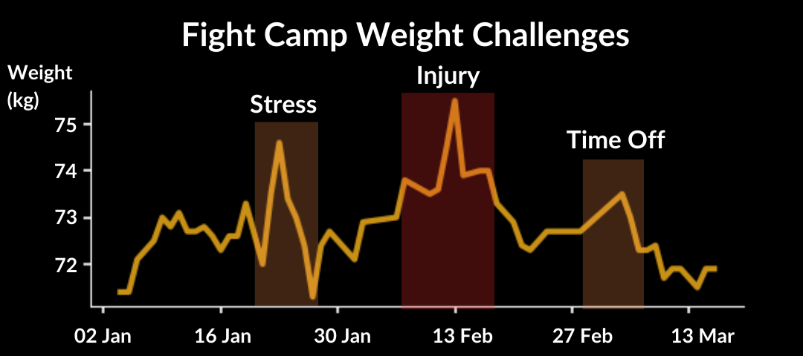

Training was back on track. But weight wasn’t shifting.
Earlier in camp, I’d attended a talk called “Fuelling Success” by Boxing Olympians Grainne Walsh, Jenny Lehane, Daina Morehouse, and Sharon Madigan (Head of Nutrition for Irish Boxing), and a few key takeaways stuck with me.
Nutrition, they said, should be treated as a core part of training, not something separate. You should establish consistent food routines so that nothing feels unfamiliar before a fight. And most importantly, under-fuelling carries risk. It can start as small strains and fatigue before developing into more severe issues, such as illness, torn muscles, and broken bones. On the other hand, fuelling properly allows you to train harder, more consistently, and recover better.
For someone fighting at 67kg, my training weight should sit around 70 to 71kg. Gradual weight loss was encouraged since rapid cuts were flagged as having the biggest impact on performance.
At the time, I was sitting around 72.5–73kg — already 1.5–2kg over the training weight. And my energy for training was hit-or-miss.
My routine for food was three main meals at 9 am, 1 pm, and 9 pm. I tried to apply the advice by adding a snack around 4pm to fuel evening training. That fourth meal used quick-releasing carbohydrates, with low fibre and low fat. Eating around two hours before training worked best for me.
Rice pudding became a go-to, as well as bananas and white bread with honey. Options like cereal left me hungry, and jam was too sharp, so I settled on what felt simple and digestible.
I kept my protein intake steady across the day (130 to 150 grams daily) and tried to manage carbs based on training load, reducing them on non-training days. But realistically, at the beginning of camp, I was training nearly every day. That left very little room to reduce without impacting performance.
And across the first seven weeks, I hadn’t lost much weight. My weight management was inconsistent, with constant fluctuation due to stress, injury, and time off. There was no clear downward trend and that concerned me. The graph below shows just inconsistent things were. I had a lot to lose, and the time window was shrinking fast.

After returning to training post-concussion, I made some changes. I dropped to five days a week – three club and two hybrid sessions combining gym and boxing, focusing on explosive drills.
The session began with a power circuit: dumbbell jumps, rotational med ball throws, med ball slams, and jumping lunges, 3-5 reps at 100% effort. Then I moved to the landmine press and weighted shadowing (30s weighted, 30s unweighted). I finished the session with sprints on the assault bike (10s on, 50s rest). The entire session was about sharpness and precision. And I really enjoyed it.
After my first spar back on Wednesday, 26th February, I spoke with my coach. He brought up the Dublin Novices, suggesting it would be a good opportunity for fight experience before Porto. I had overlooked it as my focus was on Porto, but it made sense as a tune-up rather than going into Porto raw without recent fight experience.
Fighting at 67kg meant making weight in just 25 days instead of 44. A sharp cut was now unavoidable. I felt the pressure immediately.
Thursday 27th February marked the start of Week 8, a rest week I’d planned back in January, including a weekend trip away with friends. At the time, missing three days of training didn’t seem like a big deal. But now, with just over three weeks until weigh-in and 5.5kg to lose, it felt like bad timing and a risky decision.
I went anyway. And if I’m honest, I ate all around me.
Thursday evening, I had a work party. I told myself I’d be measured, but I still ate more than I was comfortable with. Then on Friday, I trained before leaving on the trip.
Over the weekend, I made half-hearted attempts to be mindful, but most of the time I wasn’t. I ate without restraint or strategy. Sleep wasn’t great either. I’d planned to be in bed by 10 or 11, but we didn’t sleep until 12 or 1 each night. So I wasn’t training, sleeping, or eating well. For a “rest week,” it didn’t seem restful at all.
I enjoyed the time with friends. But I also felt guilty and frustrated with myself. I knew it would spike my weight. And it did. But afterwards, I accepted it. I moved on and got back to work.
The following Wednesday, I was sparring with one of the lads as part of his prep for the National Intervarsities that weekend. The spar was okay, but my work rate needed to be higher.
The National Intervarsities took place on Saturday and I went down to support. The club later went on to win 7 gold and 1 silver in the finals across novice, intermediate and senior categories – a massive result. But on that day, in the interim, I went for a walk down by the Grand Canal. I was looking ahead at the next 2 weeks, and I was still at 72.3kg, 5.3 over.
In that moment, I made a decision. In the next two weeks, I was going to cut hard and get to 67kg. I accepted the challenge, and I believed I was capable of losing the weight, performing in the ring, and maintaining focus all the way through to Porto.
I had begun water loading that day, drinking around 3-4L of water to kickstart the cut. But on the bus on the way home, I ran into a problem. As I sat down to perform a mental visualisation, I had a terrible urge to use the toilet, but I tried to hold it. I focused on breathing to help relax…without relaxing too much. Then something strange happened. After battling the urge to just get off the bus and ‘go’ using the breathing practice, I felt this intense calmness wash over me. The urge dissipated, and in my visualisation, I felt really loose and relaxed. My shoulders dropped. My arms felt light and supple, like a whip.
Before this, mentally rehearsing combinations felt impossible. The image of myself was never grounded; it felt like I was throwing punches while floating in space.
But now, I could see myself grounded in the ring. I was pressuring my opponent and cutting off space, like smoke filling a room. I combined feints, combinations, and defence fluidly. Another moment of clarity. In the process of trying not to piss myself, I ended up focusing on breathing so intently that I grounded myself, giving myself this feeling of mental ‘gravity’ that I had been missing before.
The following day, I had a sharp hybrid session, and I felt like the explosive training was paying off.
On Monday, I had a session like no other. Entering training, I held an aggressive focus, with all distractions zoned out. During shadow boxing, I felt sharp and light on my feet. My body was relaxed but explosive. During sparring, I had a high work rate, blending offence and defence. I felt this deep, unwavering self-belief, free from self-doubt. One of the lads commented I looked like a man possessed.
I believed that if I brought this version of myself into the fight, I’d win.
In the Wednesday session, I focused more on defence, footwork, and countering in my sparring. I used feints to draw my partner in and waited for them to strike before defending and countering.
By Sunday, I was one week out from the weigh-in, and I was now at 71kg, with 4kg left to go.
Next week, I describe in detail, my final week of cutting weight. You won’t want to miss it.